This is not a “rebuild of my system”. It is a codification of how my productivity/information management system has evolved naturally since Column 401 - AIM Revisited.1
That’s the gist. But if you want more detail - here goes:
Why the Tool Change?
The tool change was not intentional. It just sort of happened. One day I realized “oh, I just don’t use Notion any more.”
Notion is Better
Notion is excellent. I can’t say enough good things about it. Notion is a better tool for most people, I’d wager.
Notion’s databases are its killer feature. They are incredible, and no other tool has anything that really approaches what Notion’s they allow you to do. They alone make Notion much easier to build systems than in Obsidian. In Notion, all of your content is always there. You don’t have to worry about which device you’re using and keeping things in sync like you do in Obsidian. Notion has a polished and consistent design language, great multi-user support, and so many cool tricks up its sleeve - with more coming all the time. I think for a huge majority of users, Notion is the better choice.
…Unless Obsidian “Clicks” with You
Notion is better - unless you happen to "click" with Obsidian.
Despite everything I just said, despite the interface being clunky, despite not having databases, despite having to glob on all sorts of 3rd party tools to fill in its cracks, Obsidian is easily my favorite tool. Obsidian “clicks” with me in a way no other tool has. When I use Obsidian, I feel like the tool just goes away. I feel like it’s me working with the content directly. The tool I’m using takes up no part of my mental load. Obsidian makes flow happen in a way that Notion never quite did. Once you get over a certain hump, Obsidian becomes the fastest tool in your arsenal. You never have to take your hands off the keyboard to do anything. If you want Obsidian to do a thing, there’s typically a way to make it do that thing.
I started using Obsidian for more and more things, until one day I just realized I no longer used Notion for anything. I doesn’t feel like “I made the switch”. It feels like “the switch” just happened.
Aaron Information Management
2024 was a year in which my personal system(s) fluctuated wildly. Since 2025 is The Year of Letting it Be,2 I’m hoping what I present here doesn’t change much in the next 12 months. In order to keep everything as lean as possible, I took a very use-case-focused approach. This is what resulted from me starting with “what does the system need to do?” rather than “what tools should be in it?”
What I Need Out of a Productivity System
These five use cases are what drives the system. I need:
- A quick and easy inbox to capture ideas and tasks
- Something to surface tasks and events when they are due
- A place to put notes and tasks about things I am doing or would like to do
- A structure supporting a weekly review
- A structure for capturing quantified-self data for tracking, trending, & goal-setting
Tools
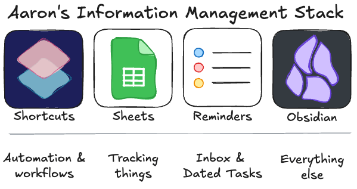
This toolset approaches perfect tool territory for me. Every tool that’s there fills a vital role. The “system” doesn’t do everything. It does enough. See the Quote.
How It Works
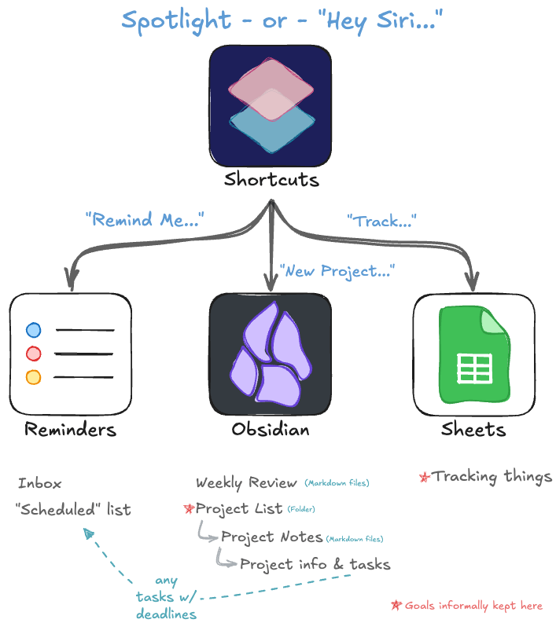
Inbox
I have Apple devices on me essentially 24/7. At any point I can say “Hey Siri Remind Me…” and then say whatever. I can share links or text to Reminders. Boom. Inbox. Easy.
Hey Siri Remind Me to make a demo of these five things
Every so often (& always during my weekly review) I deal with everything in the Reminders “Inbox” list.3
Surface Dated Tasks & Events
I use my phone’s calendar for events and have a list in Reminders called “Scheduled” for anything with a hard due date or a location-based reminders set.
Hey Siri New Event for Thursday 9am titled go to store for work potluck
I use the standard built-in calendar widget on my phone homescreen. This keeps upcoming events & reminders front-of-mind.
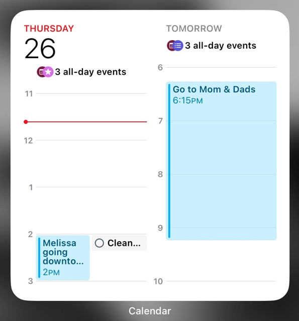
Personal Project Management
Here is where the standard iOS/Mac productivity suite just doesn’t quite cut the mustard.
Hey Siri New Project... set up playdate
A Project is just a thing you want to do that takes multiple steps. You can also think of projects as “Objectives” you want to accomplish. I like to have a place to keep a list of the things I am working toward (e.g. - “Revert Tracker”, below). In GTD vernacular this is my Project List.
For me, each project is a markdown file in a folder (using Obsidian). The project list is the folder itself.
Notes & Tasks
Each of the project files is a place to keep tasks and project notes. This collocates the objective with all the relevant tasks and info I need to accomplish it. I don’t have tasks/notes strewn about multiple places. I can see everything related to the project at once.
Folders
Each project note is kept in a folder in accordance with its lifecycle state.
- Active - things I’m doing now
- Prospective - things I will (perhaps) do at some point
- Hold - things I have a reminder set to work on at a specific point
- Archive - things I’ve done
Template
I use a very simple template for projects.
# Result
# Scope
# WorkspaceWhat goes in each section?
- Result: I include a “results” section because of how many times I revisit a completed project’s materials only to ask “okay, what actually came out of this? Where did I put it?” When I complete a project, I make quick note of what the outcome was or where it is.
- Scope: Any clarification beyond the project’s title for what it is, often a checklist.
- Workspace: Full of whatever content is helpful. It’s literally the space where the work happens.
Here’s an example of a completed project file:
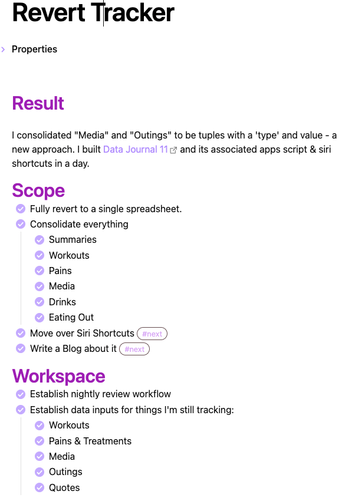
Next Actions Overview
If my tasks are stored inside the notes for each project, how do I get an overview of all the tasks I could be doing? To get this list of Next Actions I utilize Obsidian’s tagging feature. I don’t want every single checkbox I make to show up, only those tagged with #next.
For example:
- [ ] Edit podcast #nextI use this in combination with Obsidian’s awesome Dataview plugin to create a centralized list of all the outstanding #next actions. The dataview code for this:
Task
Where contains(tags, "#next")
Where status = " "
Group by file.linkYielding a list of “Next Action” tasks grouped by the Project they’re in:
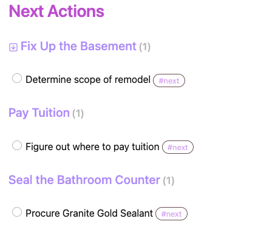
I use a pinned tab on my “Home” page as a sidebar in Obsidian. This is a landing spot for quick links,4 next actions, and my active project list.
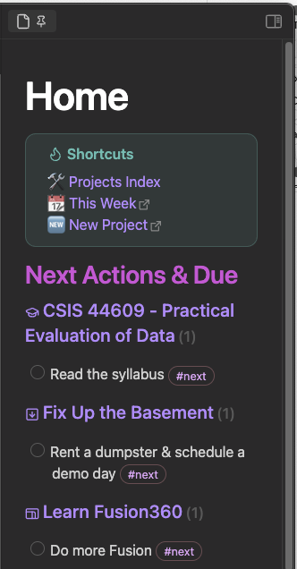
Structure for Weekly Review
The weekly review is the lynchpin of my productivity system. I’ve used calendar events & recurring tasks before, but I like the ability to have a spot to accumulate thoughts/tasks/whatever throughout the week that I want to review. This lead me to an Obsidian-based weekly review.
Tip
You can use Obsidian’s built-in “Daily Notes” plugin as a weekly notes by changing “Date format” to
GGGG-[W]ww: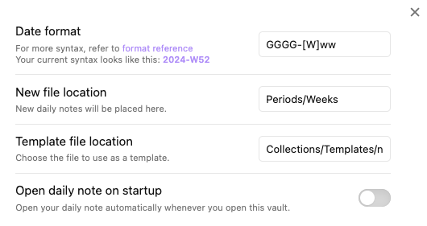
My weekly review note template is very minimal.
# Goals
%set some goals for the week%
- [ ]
- [ ]
# Weekly Review
- [ ] Inbox Zero
- [ ] Preview calendar ahead
- [ ] Review Projects List
- [ ] Create next week's weekly page
# Notes
%place to put things throughout the week for weekly review%Hopefully showing the template there is enough for you to figure out how my process there works.
Quantified Self Structure
See Data Journal. TL;DR - A Google Sheets workbook with a few sheets for things and Siri Shortcuts that make capturing data easy.
Hey Siri Track Workout...
I look at my Data Journal spreadsheet every night to input a summary of the day. This keeps me honest and aware of trends like the fact I haven’t worked out in 7 days.
What About Goals?
I no longer have a formal system for managing goals. Having something separate just isn’t all that necessary. I’ve got my annual year in review Column wherein I establish longer-term goals (like KPIs on the Data Journal data), and beyond that all my goals are bound to a project.
Conclusion
That concludes it5.
Top 5: Siri Shortcuts + Obsidian Pro Tips
Shortcuts is awesome and doesn’t get the credit it deserves. It can superpower Obsidian, too!
5. Quick Search
Do a search on your vault with your voice or Spotlight.
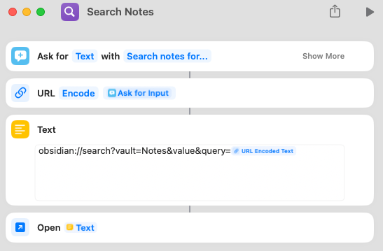
4. Home Screen Icons for each Vault
Have more than one vault in Obsidian? Use a Siri Shortcut “Open URL” action to open the vault you want, and add the shortcut to your home screen to get to them in one tap. These three purple icons each open one of my 3 Obsidian vaults.
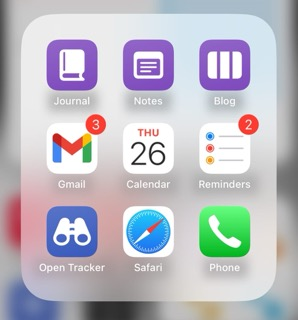
3. Home Screen Icons for Specific Notes
You can use the same trick as above to add an icon to open directly to specific notes within a Vault. You could have an icon to take you to your project list note, or a general home page, or both! My “Journal” icon takes me to a 🏡 Home page in the vault.
2. Append Content to a Note
If you have an “Inbox” note, or (like shown below) you use a Daily Note, you can easily append new lines (or tasks) to it using a shortcut. This takes advantage of the fact that notes are just text files. You’re technically not touching Obsidian at all, just appending to a file upon which it operates.
Tip
Use the “Append to Text File” action rather than Obsidian’s URI + “Open URL” method. The Open URL method requires the phone to be unlocked, whereas the append to text file can run while the phone is locked.
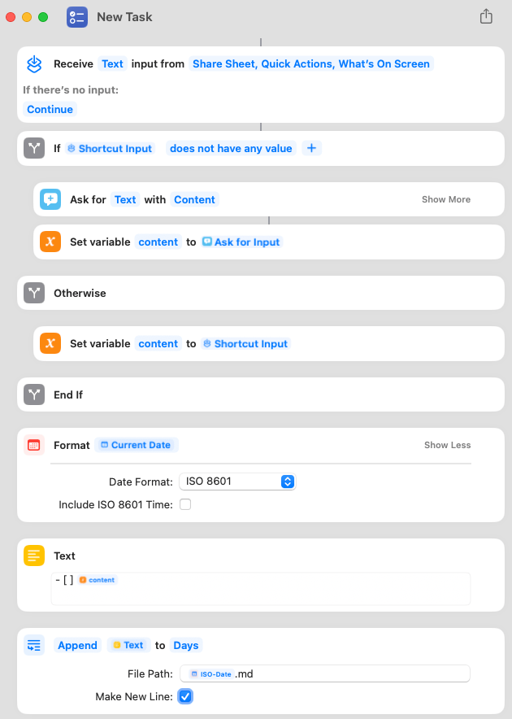
1. Add New Notes
You can also use shortcuts to create an entirely new note. This example includes 3 “Ask for Text” prompts to fill out my project template, then saves it as a Markdown file in my “Projects/Prospective” folder.
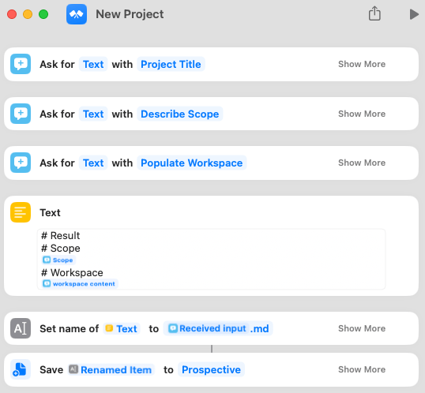
Quote:
More is Unnecessary. Less is Impossible. - Sonke Ahrens
Footnotes
-
This is different from Making an Obsidian Bullet Journal, which I did for a bit - but then decided was too complicated. ↩
-
“Let it be”, my theme for 2025, has already prevented me from starting up a new project to shake up my toolset. More on this next Column. ↩
-
And my email inbox, but that’s a different thing. ↩
-
Using Obsidian’s URI feature to make links that create new Projects, or a link that dynamically points to this week’s weekly note ↩
-
This is me telling my future self “YOU’RE DONE MAN. THIS WORKS. IT IS CONCLUDED”. ↩